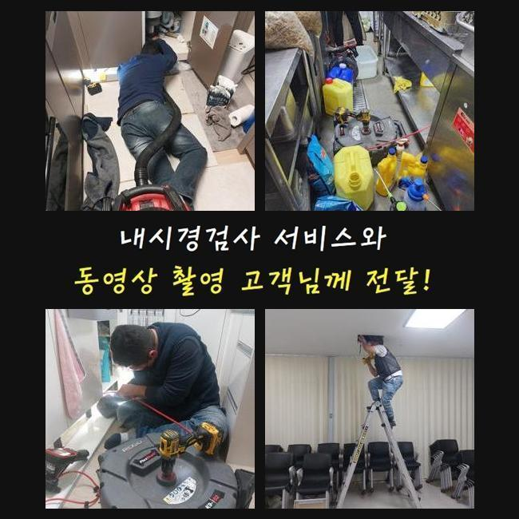
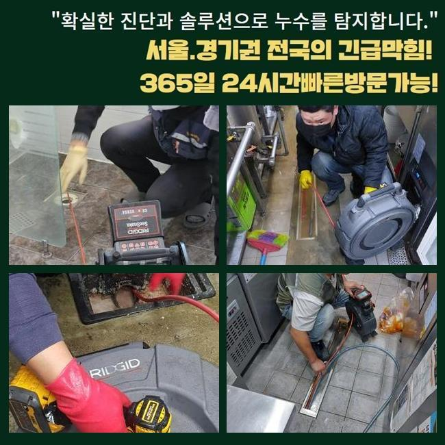
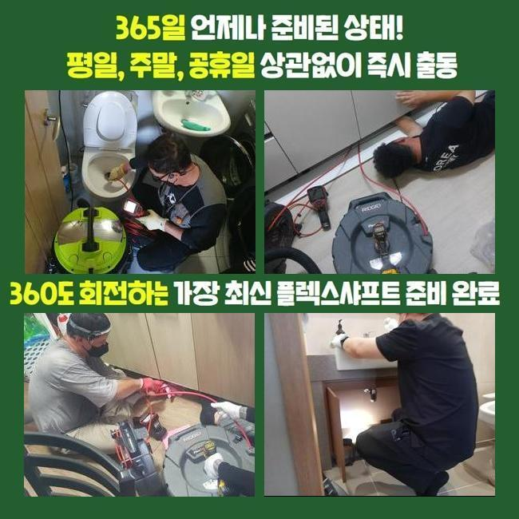
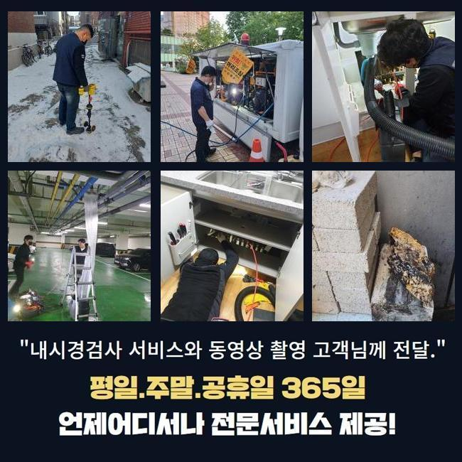
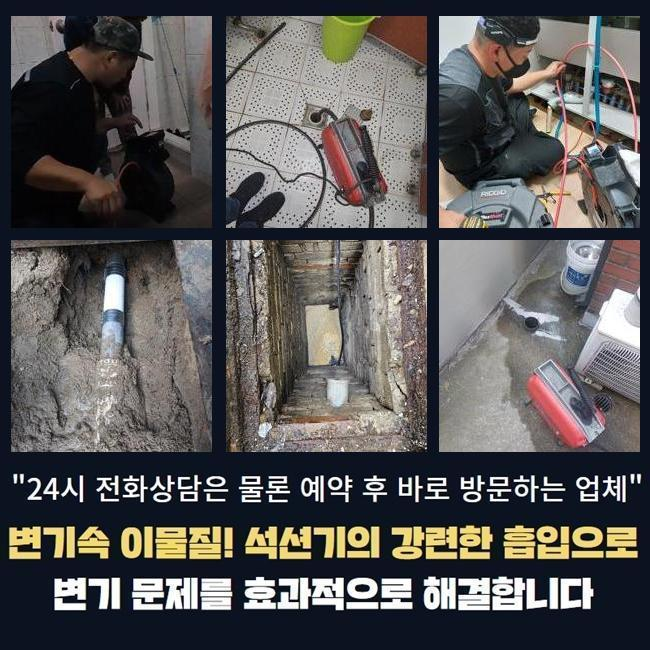
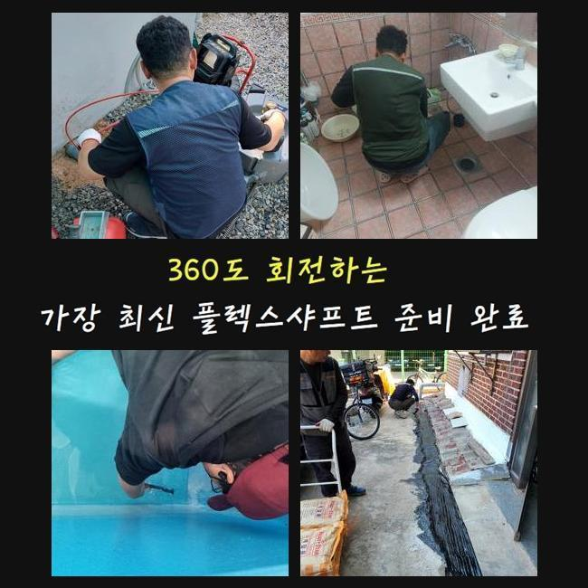
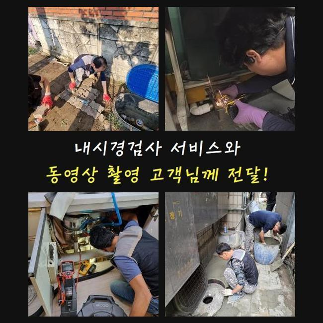

🏠 광주 쌍령동변기뚫음 오포읍 하수구청소 설비하는곳
광주 쌍령동 싱크대막힘 전문 시공 후기

📋 작업 개요
- 위치: 광주 쌍령동, 쌍령동, 광주
- 서비스 유형: 싱크대막힘, 변기막힘, 하수구막힘, 배관막힘, 누수수리, 역류해결, 뚫는업체, 배관청소
- 작업 일시: 2025. 6. 2. 16:55
- 업체명: 하수구수사대 (010-5615-2118)
🔍 문제 상황
신속히 흐르던 수도가 갑작스럽게 답답한 느낌으로 배출되는 현장이 있습니다
단기간 동안에만 생겨난것일거라고 할 수 있겠지만 배수불량의 조기 증상들일 확률이 큽니다 이상증세들이 생겼더라도 서둘러 피해가 생기지-는 않아요
광주 쌍령동변기뚫음 오포읍 하수구청소 설비하는곳
허나 합리적인 대응은 증상들이 가벼울 때 결함을 시정해주는것입니다
위험한 방식을 이용하시거나 락스와 같은 화학품들을 남발하신다면 역으로 피해들이 커진다는것을 염두에 두어야하죠
하물며 주방쪽에서 물이 새는 문제가 나타나면 헤매시는 고객님들이 많이 보여요
누수와 관련된 문제들은 다양한 원인들이 존재할 수 있기에 가볍게 여기시면 안되겠는데요
하수도의 결함일 확률도 존재하고 하수도가 막혀버리면서 물들이 솟아오르게된건지는 봐야알죠
며칠전 저희들에게 연락하신 고객분도 누수등이 나타나며 씽크대 이용을 못하시던 문제들이었어요
먼저 하부장의 아래서부터 새게 되면 배관누수 자체를 의심해야합니다
반대로 오염수준이나 누수되어 흐르게된 양상들을 세심히 들여다본다면 다른 점이 있는데요

🔎 원인 분석
💡 전문가 진단: 정밀 진단 장비를 사용하여 슬러지의 고착 여부를 판명하고 타격/세척 작업을 실시했습니다.
개수대라인이 정체를 보이며 이런 문제들이 생긴거면 바닥에서 솟구치는 사례가 상당하고 잔해들도 동시에 솟구치기에 냄새까지 생겨나요
문제에 있어서 주방쪽에서 물샘이 생겨났다면 별거 아닌것으로 판단하시곤 락스등으로 대표되는 화학품을 남발하기 전에 전문진들로부터 현 상황에 대해 진단받아야해요
우선 고객님댁에 찾아뵈어 점검을 수행하니 주방에서부터 냄새자체가 불거진것이 확인됐어요
이런 악취들이 올라오게되는 연유는 심층부로부터 흡착물들이 부패들을 피하지 못해서입니다
오수들이 통수가 안되며 하수관에서 썩는다면 냄새들은 심각해지겠죠?
더 나아가 막힘이 심한 경우라면 배수관의 압이 위를 향하므로 점차 장판으로 역류하죠
그러니 싱크대 누수등이 목격되었을 땐 의외의 까닭을 전체에 걸쳐 관찰해야합니다
1차적으로 어떤 위치에까지 피해들이 생긴 건지 면밀히 살펴야하기에 하단쪽을 열고 내측을 살폈습니다
부속품 중간중간에서도 누수와 연관된 상황으로 보여졌습니다
그러니 이렇게 바닥부분으로 누수되는 속도들이 빨랐던 것이죠
허나 들여다봐야했던 것은 심부까지 축적된 이물인지라 정확한 현 상황에 대해 서둘러 검수해보고 이상있는 포인트를 뚫는게 우선입니다
통상적으로 싱크대 쪽에서 생기는 이런 결함들은 슬러지때문일 경우들이 대다수에요

🔧 작업 과정
보통의 이물에 비해 슬러지들이 뭉친 상태라서 점성들도 강하며 뭉친다면 사이즈가 증가되는 현상들이 많습니다
그렇지만 고객님들 차원에서 신속하게 타개하고자 세정제등을 무분별하게 쓴다면
하수관로에 축적된 기름들로 구성된 이물들과 몸집을 불려가며 막힘증상들이 커지게됩니다
바닥 배수관과 이어진 주름주름관로도 체크하니 오염도가 심각했던 모습이였고 안쪽부분엔 찌꺼기가 꽤 많았는데요
현재까지 간헐적으로라도 관로를 청소해주시지 않아서 구간마다 증상들이 발견된 상태였어요
고객께서 작업하시는 김에 주름호스들도 새로이 교체하는게 좋을거란 설명까지 전해드렸어요
주름관들을 해체해주고 역류된 잔여물질들은 석션기기로 먼저 흡입하여 제거시켜야했습니다
초반부에 고이게 된 이물도 없애주어야 했기에 더러워진 지점들은 석션장비를 통해 정리해주었습니다
때때로 석션장비의 과정만을 거쳐 문제들이 바로 잡히는 사례들도 존재하는데요
그렇지만 고객분의 자택에선 심각했던 상황이었기에 내시경장치로 자세한 현 상황에 대해 체크해주어야했는데요
허나 결함이 비슷해도 구조들이 작업 시점에 원활한 상태가 아니면 기간들이 추가적으로 걸리게되는 사례도 존재합니다
만일 엘보구간들이 복잡하게 자리하고 있다면 내시경장비를 배수관으로 넣는것도 어려워요
그렇지만 다행히 고객님댁에서는 그 정도의 상황은 아니였기에 신속히 내시경기기를 심부까지 삽입시켰습니다
내시경으로 현 원인들을 구간마다 점검해주니 하수구 안쪽엔 기름들이 고착된 상황으로 파악되었죠
기름성분들은 시간들이 지나면 딱딱해지며 벽라인에 흡착되어있는 경우들이 대다수라 간소한 장비론 개선시키기가 어렵습니다
그렇기에 펑크린과 같은것으론 무리일 수 있다고 안내하는겁니다
그렇기에 샤프트기기를 꺼낸 후 배수관로의 깊숙한 지점까지 케이블라인을 넣어주기 시작했는데요
심층부까지 당도해 청소과정을 하기 위해서죠


✅ 작업 완료
샤프트기기는 노커를 기름때가 자리한 구간에 넣어주고 여러잔해로 쪼개주는 방법으로 진행시킵니다
떨어져나간 잔해물의 경우엔 석션기기를 써서 외부로 빼줍니다
하수들이 정체된 스팟들을 정리한 후 호스들과 배수통까지 새 개체로 바꾼 후 연결시켜드렸어요
또한 마지막으로 배수가 잘되는지 통수 테스트를 해보니, 이전과 달리 정상적으로 흘러나가는 모습을 확인했죠
배수통부품과 주름호스들도 깔끔히 마감되면서 전체적으로 정리할 수 있었어요




⚠️ 베란다 누수 및 방수 관리 방법
- ✅ 비가 많이 올 때 창틀 주변이나 아래층 천장에 얼룩이 생기는지 정기적으로 확인해 보세요.
- ✅ 우수관 주변 실리콘 마감이 들뜨거나 깨진 틈새가 있는지 손상 여부를 수시로 체크하세요.
- ✅ 베란다 바닥 타일의 줄눈(메지)이 소실되면 그 틈으로 물이 침투하여 누수가 유발됩니다.
- ✅ 누수 의심 증상 발견 시 방치하면 아래층 손실이 커지므로 즉시 전문가의 진단을 받으십시오.
💡 핵심 정리
- 확실한 장비 작업(내시경 점검 및 샤프트 스케일링)으로 원인을 뿌리 뽑습니다.
- 작업 후 1년 이내에 동일한 부위 재발 시 100% 무상 A/S 서비스를 보장합니다.
- 서울 · 경기 · 인천 전 지역에 24시간 언제든 긴급 출동할 수 있도록 항시 대기 중입니다.
❓ 자주 묻는 질문 (FAQ)
🚨 광주 쌍령동 싱크대막힘 문제로 고민이신가요?
정확한 원인 진단과 확실한 시공으로 재발 없는 해결을 약속드립니다.
24시간 긴급 출동 | 서울 · 경기 · 인천 전지역 | 1년 내 재발 시 무상 A/S